“máximo divisor comum” não fala de tamanho — fala de quem divide quem
O nome sugere uma corrida: entre os divisores que dois números têm em comum, o maior ganha. A definição que se usa de verdade não diz isso, e a prova de que não diz cabe numa linha — o máximo divisor comum de zero e zero é zero.
Varredura de 01/09/2026 nos onze seminários da série, por duas sondas independentes: as palavras primo, máximo divisor comum e mínimo múltiplo comum aparecem zero vezes. Fatoração aparece — sempre usada, nunca ensinada.
Autor · Mateus Felipe Alkimim Pereira
Coautora · Sara Catiele Nogueira Pereira
Orientador · Rosivaldo Antônio Gohnan
| \(d \mid n\) | lê-se “\(d\) divide \(n\)”. O traço é vertical, e o que ele produz é uma afirmação: verdadeira ou falsa |
| \(n \div d\) | lê-se “\(n\) dividido por \(d\)”. O traço é inclinado, e o que ele produz é um número |
| \(\mathrm{mdc}(a,b)\) | lê-se “máximo divisor comum de \(a\) e \(b\)” — o número que divide os dois, e que todo divisor comum divide. Em pé, porque é nome de operação, não três letras multiplicando |
| \(\mathrm{mmc}(a,b)\) | lê-se “mínimo múltiplo comum de \(a\) e \(b\)” — o múltiplo dos dois que divide todos os outros múltiplos comuns. Mesma regra do anterior |
| \(2^{4}\) | lê-se “dois elevado a quatro”. Aqui o expoente conta quantas vezes o primo aparece — nunca qual deles é |
as letras \(a\), \(b\), \(d\), \(k\), \(n\) são números inteiros nesta aula inteira, e nada mais. Onde aparecer letra, leia “um inteiro qualquer”.
Do produto, e de mais nada — o seminário 1 já mostrou que dividir é multiplicar pelo inverso. Não usa função, não usa gráfico, não usa geometria.
A fração: sem divisor comum não se reduz, e sem múltiplo comum não se soma. E, lá na frente, o denominador das frações parciais do cálculo — que é a mesma regra com letra no lugar do número.
São dois sinais parecidos que produzem coisas de naturezas diferentes. \(48 \div 6\) é uma conta, e o resultado dela é um número: oito. \(6 \mid 48\) é uma afirmação, e o resultado dela é verdadeiro.
Confundir os dois é o tropeço mais comum do assunto, porque a fala é a mesma nos dois casos — a gente diz “seis divide quarenta e oito” querendo dizer as duas coisas.
“A gente escreve assim, com um traço […] Isso aqui não é \(d\) dividido por \(a\), não é assim. O traço não está desse jeito, ele é bem vertical.”
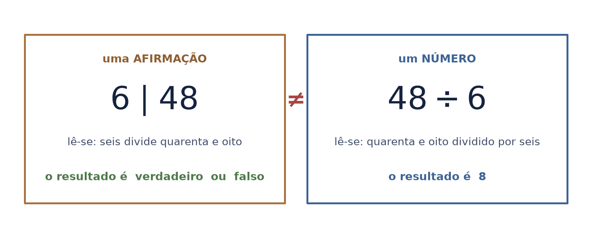
\(d \mid n\) quer dizer: existe um inteiro \(k\) tal que \(n = d \times k\). Não é “dá um número redondo”, não é “a conta é fácil” — é a existência de um inteiro que completa o produto.
Seis divide quarenta e oito porque existe o oito: \(8 \times 6 = 48\). Seis divide dezoito porque existe o três: \(3 \times 6 = 18\). Seis não divide vinte porque nenhum inteiro faz isso.
o teste é o resto. Resto zero é a afirmação verdadeira; qualquer sobra a derruba, e não importa se a sobra é grande ou pequena.
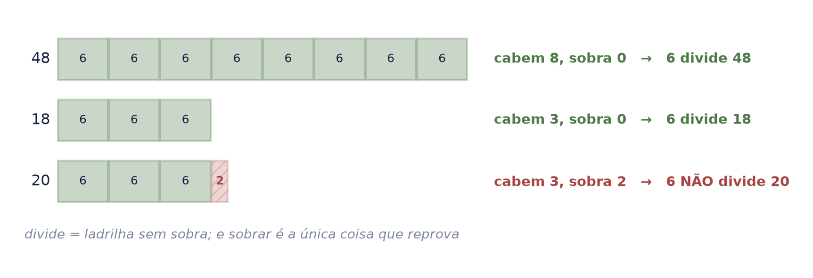
Ponha o zero na definição e veja o que sai: para qualquer \(d\), existe um inteiro que multiplica \(d\) e dá zero — é o próprio zero. Logo \(d \mid 0\) é verdadeiro sempre.
Isso não é uma curiosidade de canto. É o caso que vai revelar, três folhas adiante, que o nome “máximo divisor comum” está descrevendo a coisa errada.
“Quais são os divisores de zero? Qualquer número é divisor de […] zero dividido por cinco dá quanto? Zero dividido por três dá zero. O cinco é divisor de zero e cinco é divisor de cinco.”
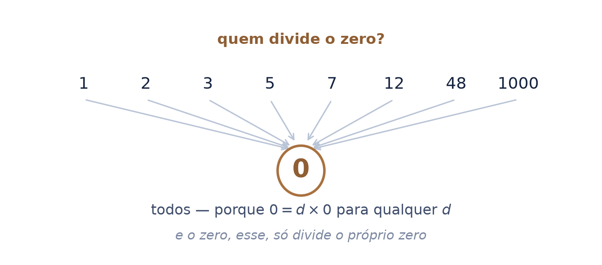
Um primo é um número maior que um que só é dividido por um e por ele mesmo. Todo inteiro maior que um se escreve como produto de primos, e — o que é raro e vale ouro — de um jeito só, a menos da ordem.
Por isso \(48 = 2^{4}\times 3\) não é o resultado de uma conta sobre 48: é o nome verdadeiro dele. O 48 do dia a dia é a roupa; a fatoração é o corpo.
é a mesma tese do seminário 0, um andar acima: lá o mesmo número tinha vários numerais; aqui ele tem uma lista de primos, e só uma.
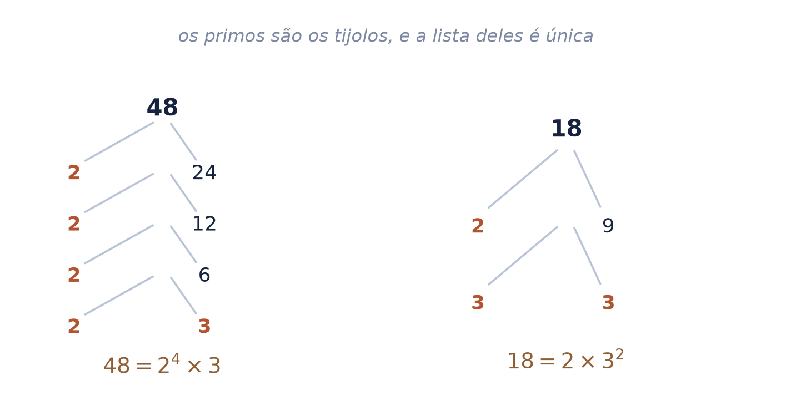
A primeira é a que todo mundo sabe: \(d\) divide os dois. A segunda é a que decide, e quase ninguém enuncia: todo outro divisor comum divide \(d\).
Teste com 48 e 18. O três passa na primeira — divide os dois. Na segunda ele reprova: o seis também é divisor comum, e o seis não divide o três. Já o seis passa nas duas, e é por isso que ele é o máximo divisor comum.
“\(d'\) divide \(a\), \(d'\) divide \(b\), então implica \(d'\) tem que dividir o maior divisor comum. […] 6 não divide 3. O mdc de 48, 18 tem que ser diferente de 3.”
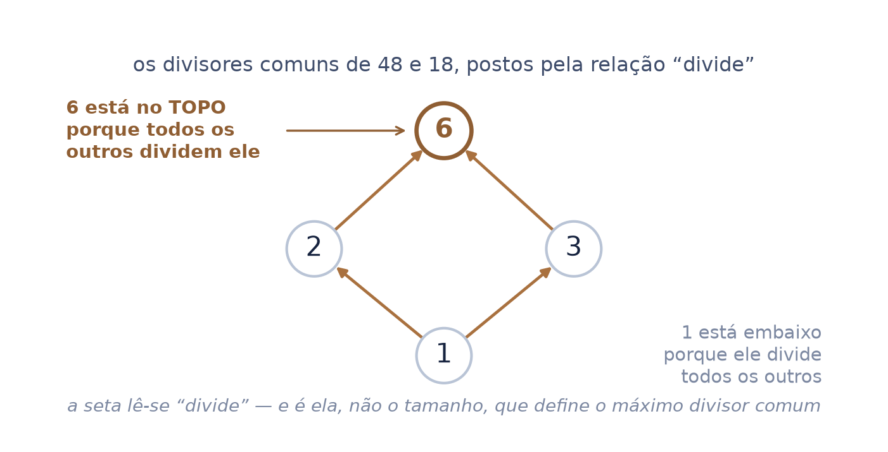
Se “máximo” quisesse dizer maior, esta pergunta não teria resposta: todo número divide o zero, e a lista dos divisores comuns não tem fim.
Pelas duas condições ela tem, e é o zero — porque o zero é dividido por todos, e todos os divisores comuns dividem o zero. O zero é o topo da ordem “divide”, ao mesmo tempo que é o meio da reta. As duas ordens são diferentes, e essa é a folha inteira.
o nome ficou por herança: em Euclides o objeto se chamava medida comum, e medir era o verbo. “Máximo” sobreviveu à definição que o justificava.
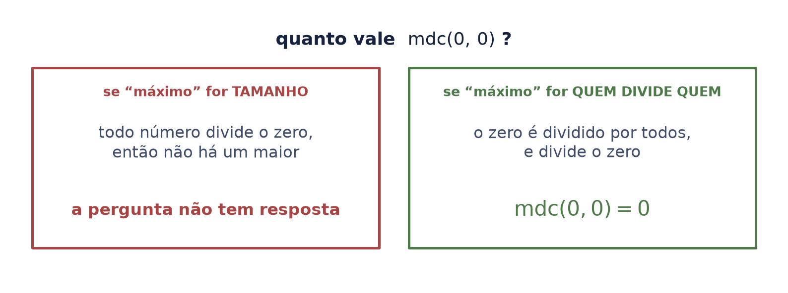
Fatorar números grandes é caro. O algoritmo evita isso inteiro: divida o maior pelo menor, guarde o resto, repita com o divisor e o resto. Quando o resto zera, o último resto não nulo é o máximo divisor comum.
Funciona porque todo divisor comum de \(a\) e \(b\) também divide o resto — a segunda condição da folha anterior, trabalhando.
O Livro VII dos Elementos abre com o algoritmo do máximo divisor comum e fecha com a regra do mínimo múltiplo comum (Prop. 39). Os dois nasceram juntos, no mesmo livro.
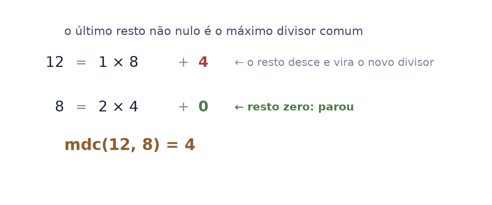
Escreva os dois números com os mesmos primos. Pegue de cada primo o menor expoente e você tem o máximo divisor comum; pegue o maior e você tem o mínimo múltiplo comum.
É uma fatoração só, lida dos dois lados. Não são dois assuntos — é um assunto com duas perguntas, e é por isso que quem aprende a fatorar ganha os dois de uma vez.
o produto dos dois devolve o produto dos números: \(6 \times 144 = 864\) e \(48 \times 18 = 864\). O que um leva em expoente, o outro deixa.
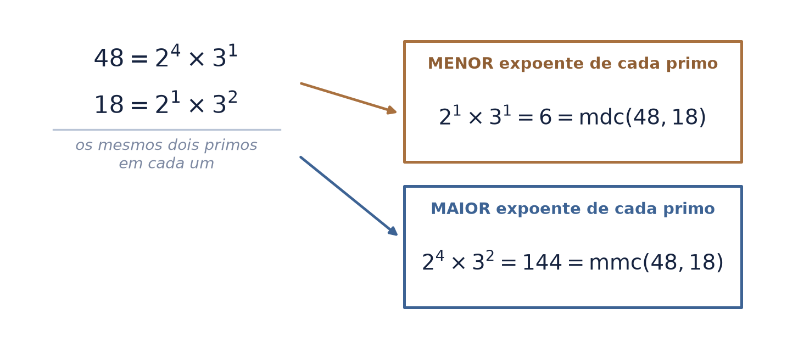
Os divisores de um número são finitos e nenhum passa dele: existe um maior. O menor divisor comum de qualquer par é sempre o um, então não haveria o que perguntar.
Os múltiplos são infinitos e não param: maior não existe. Mas há um menor. Daí “máximo” num e “mínimo” no outro — os nomes registram uma assimetria dos conjuntos, não uma escolha de vocabulário.
“mínimo divisor comum” e “máximo múltiplo comum” não existem — não porque ninguém batizou, mas porque não há o que batizar.
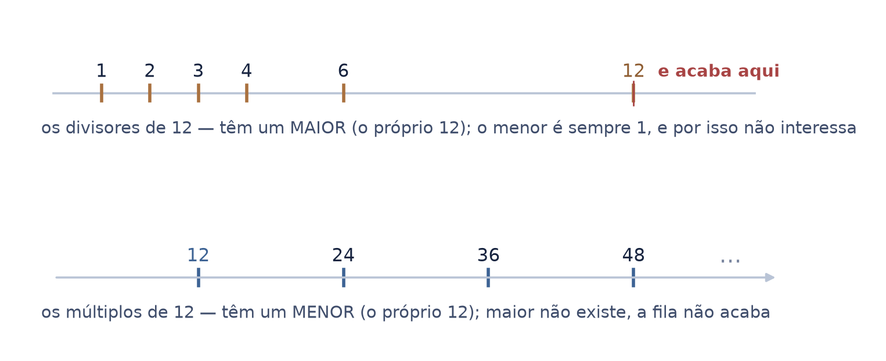
Reduzir uma fração é dividir o de cima e o de baixo pelo máximo divisor comum. É o que troca \(18/48\) por \(3/8\) sem trocar o número — só o nome dele.
Somar duas frações é subir as duas ao mínimo múltiplo comum dos denominadores. Sem denominador comum não há o que somar: as partes não são do mesmo tamanho.
O papiro de Ahmes reparte pães entre dez homens usando “a kind of equivalent to our least common multiple”. A conta é de 1650 a.C.; o nome veio muito depois.
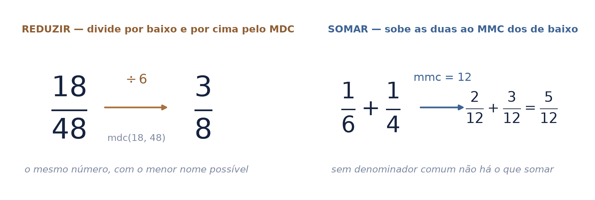
No cálculo, integrar uma fração de polinômios começa por quebrá-la em pedaços — e para isso é preciso montar o denominador comum. A regra é idêntica: cada fator distinto, com o maior expoente que ele tiver.
Quem não tem esta aula chega lá e vê uma técnica nova. Quem tem, vê o mínimo múltiplo comum de sempre, com \((x-1)\) ocupando o lugar que o dois ocupava.
“O mínimo múltiplo comum de dois ao quadrado, de dois e de três vai dar doze. Então quando aparece termos com expoente, você tem que [pegar] o cara com o expoente […] vezes o fator distinto.”
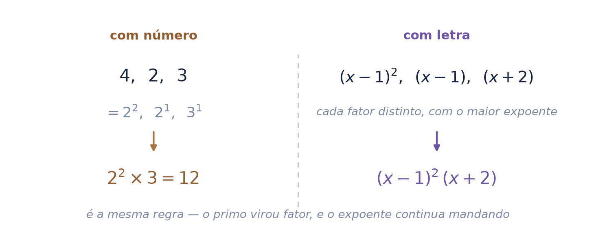
| uma relação | \(d \mid n\) — existe um inteiro que completa o produto |
| um sinal | o traço vertical, que afirma; não o inclinado, que calcula |
| uns tijolos | os primos, e a lista única que todo inteiro tem |
| duas condições | divide os dois, e é dividido por todo divisor comum |
| uma fatoração | lida por baixo dá o máximo divisor comum; por cima, o mínimo múltiplo comum |
| dois pagamentos | reduzir e somar fração — e, anos depois, o denominador das frações parciais |
Este nó da base é consumido por frações, pela álgebra elementar e pelos polinômios — e é por eles que ele chega aos dois troncos.
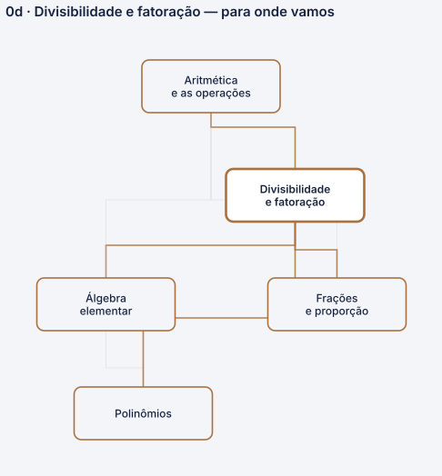
Abrimos perguntando o que “máximo” está medindo. A resposta é que ele não mede: o máximo divisor comum é o divisor comum que todos os outros dividem, e o mínimo múltiplo comum é o múltiplo comum que divide todos os outros. A relação é sempre a mesma — quem divide quem.
A prova de que a leitura por tamanho não serve está no caso mais magro que existe: o máximo divisor comum de zero e zero é o zero, que é o menor número não negativo da reta e o topo da ordem da divisibilidade ao mesmo tempo.
Congruência e resto como assunto próprio, números primos entre si como ferramenta, a prova de que a fatoração é única, e a de que o algoritmo de Euclides sempre termina. Tudo isso existe, e nada disso cabe aqui.
e não trata de frações — só entrega a elas o que faltava. Fração e proporção são do seminário 1, que já existe.